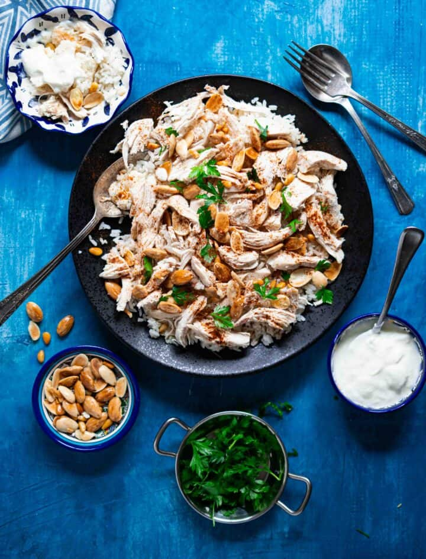

CHICKEN FATTEH

WHAT IS FATTEH?
Fatteh is a popular Middle Eastern dish that typically consists of layers of bread, topped with various
ingredients such as meat, vegetables, legumes, yogurt, and spices. It is commonly served as a main course.
The word fatteh translates to "crumbs” or "broken pieces" in Arabic, referring to the use of bread in the dish.
The bread is either toasted or fried until crispy or soaked with broth mixed in garlic and lemon juice.
Normally, bread is the base layer of any fatteh dish.
INGREDIENTS
- Chicken breast
- Chicken broth
- Cardamom seeds, cinnamon sticks, and bay leaves
- Short-grain rice
- Flatbread
- Garlic Cloves
- Lemon Juice
- Sea salt
- Almonds and pine nuts
INSTRUCTIONS
- In a medium pot, cover chicken with water until submerged, add bay leaves, cinnamon sticks, and cardamom
seeds. Once it starts boiling remove any extra foam on top, and let it boil on medium heat for 20-30 minutes
and until the chicken is fully cooked.
- Let chicken cool until it's safe to touch. Remove bones, and shred chicken into small pieces.
- Cut bread into bite-sized pieces and lightly toast them.
- Pour chicken broth (¼-1/2 cup), crushed garlic, lemon juice, and salt over bread.
- Mix everything well and layer at the bottom of a platter.
- Layer rice on top of the bread, then layer shredded chicken on top of the rice.
- Sprinkle toasted almonds and pine nuts and serve.